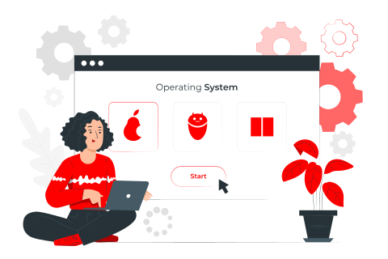

Primeiro Semestre
O Módulo Básico, que será desenvolvido em 400 horas, está estruturado para desenvolver as competências socioemocionais (capacidades socioemocionais) mais recorrentes e significativas que resultaram da análise do perfil profissional do Técnico em Desenvolvimento de Sistemas. Dessa forma, assume caráter de pré-requisito para o Módulo Específico, devendo ser desenvolvido integralmente no primeiro semestre do curso, observando-se, ainda, as recomendações que seguem.
Fundamentos da Programação Orientada à Objetos - FPOO
Essa unidade curricular visa propiciar a aquisição de capacidades básicas relativas à lógica de programação, como ferramenta para desenvolvimento de aplicações, utilizando linguagem orientada a objetos, bem como o desenvolvimento das capacidades socioemocionais adequadas a diferentes situações profissionais.
Carga horária: 175 horas
Linguagem de Marcação - LIMA
A unidade curricular Linguagem de Marcação visa propiciar a aquisição de capacidades básicas relativas ao leiaute, codificação e estilização de páginas web por meio de linguagem de marcação, bem como o desenvolvimento de capacidades socioemocionais adequadas a diferentes situações profissionais.
Carga horária: 75 horas
Sistemas Operacionais - SOP
A unidade curricular Sistemas Operacionais visa propiciar a aquisição de capacidades básicas relativas à estrutura, funcionamento, instalação, configuração e operação de sistemas operacionais de código aberto e fechado, considerando interface gráfica e linha de comando, bem como o desenvolvimento das capacidades socioemocionais adequadas a diferentes situações profissionais.
Carga horária: 75 horas
Hardware e Redes - HARE
A unidade curricular Hardware e Redes visa propiciar a aquisição de capacidades básicas relativas à preparação do ambiente de hardware e dos requisitos para funcionamento de redes de computadores, necessários para o funcionamento de sistemas computacionais, bem como o desenvolvimento de capacidades socioemocionais adequadas a diferentes situações profissionais.
Carga horária: 75 horas